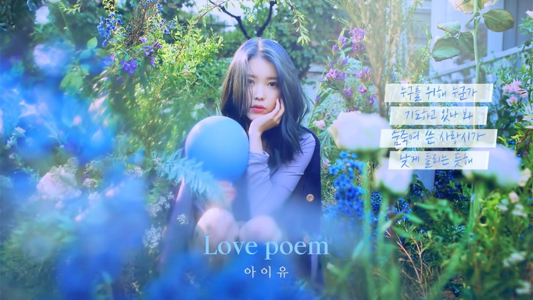

 사랑하는 사람이 홀로 고립되어 가는 모습을 보는 것은 힘든 일이다. 아무것도 해 주지 못하고 지켜보기만 하는 것이 괴로워 재촉하듯 건넸던 응원과 위로의 말들을, 온전히 상대를 위해 한 일이라고 착각하곤 했다.
나는 여전히 누군가 내 사람이 힘들어하는 모습을 보면 참견을 잘 참지 못한다. 하지만 이제는 나의 그런 행동들이 온전히 상대만을 위한 배려나 위로가 아닌 그 사람의 평온한 일상을 보고 싶은 나의 간절한 부탁이라는 것을 안다. 염치 없이 부탁하는 입장이니 아주 최소한의 것들만 바라기로 한다. 이 시를 들어 달라는 것, 그리고 숨을 쉬어 달라는 것. 누군가의 인생을 평생 업고 갈 수 있는 타인은 없다. 하지만 방향이 맞으면 얼마든 함께 걸을 수는 있다. 또 배운 게 도둑질이라, 나는 나의 사랑하는 사람들에게 얼마든 노래를 불러 줄 수 있다. 내가 음악을 하면서 세상에게 받았던 많은 시들처럼 나도 진심 어린 시들을 부지런히 쓸 것이다. 그렇게 차례대로 서로의 시를 들어 주면서, 크고 작은 숨을 쉬면서, 살았으면 좋겠다.